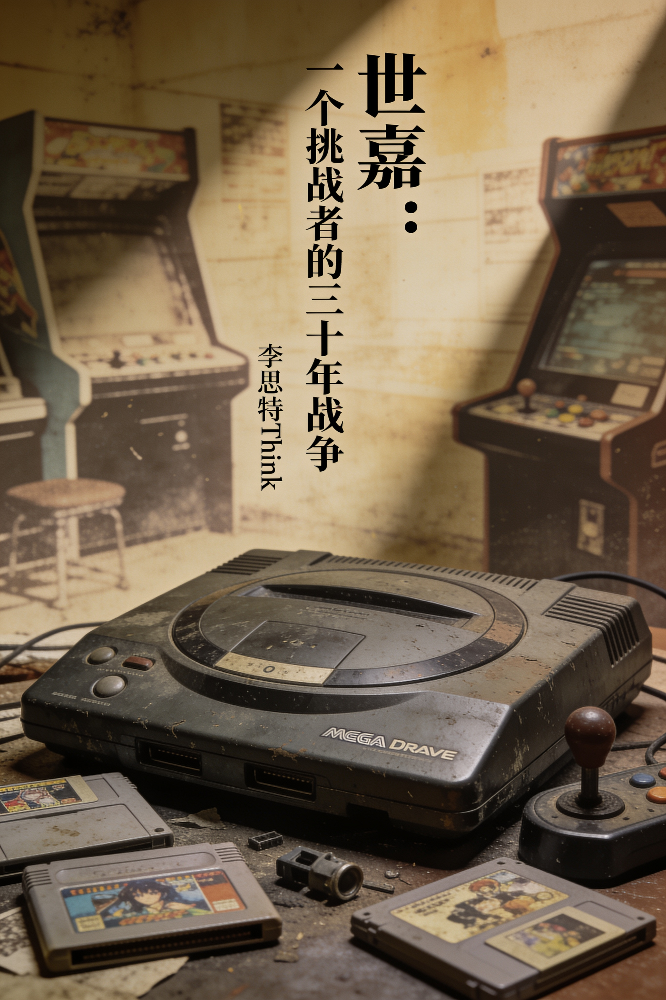

内容简介
本书是一部关于世嘉（SEGA）的完整商业兴衰史。它追溯了这家公司从战后日本的投币机生意起步，凭借街机基因崛起为全球游戏巨头的历程。全书核心揭示了世嘉作为“永远的挑战者”的内在矛盾：激进的硬件策略与快速的迭代能力，使其在十六位机时代一度领先，却也导致了土星和Dreamcast时代的仓促与消耗。书中细致呈现了日本本社与美国分部间的路线斗争、街机现金流与主机烧钱业务的互搏，以及最终退出主机硬件市场、转型为内容提供商的关键转折。叙事基于公开史料，贯穿了蓝色刺猬索尼克的诞生、标志性的营销战役、与任天堂和索尼的惨烈竞争，直至世嘉飒美时代的整合与IP在当代的复兴。
目录
共 38 章第 01 章投币机里的战后日本第 02 章街机基因的诞生第 03 章被收购的挑战者第 04 章从街机到客厅的跳跃第 05 章美国前哨的诞生第 06 章蓝色刺猬的史前史第 07 章速度的诞生第 08 章十六位机战争的前哨第 09 章美国阵线的咆哮第 10 章维珍的欧洲赌局第 11 章音速星期二的巅峰第 12 章本部的反制与32X的种子第 13 章32X：自噬的加速第 14 章土星：仓促的抢跑第 15 章论断：1995年5月11日第 16 章索尼的阴影与第三方的叛离第 17 章论断：Dreamcast的诞生是世嘉在土星惨败后第 18 章索尼克大冒险与创意复兴第 19 章最后的日本首发第 20 章9/9/99：一场预支的胜利第 21 章铃木裕的终极赌注第 22 章联网的孤岛第 23 章索尼的死亡行军第 24 章大川功的最后一课第 25 章裁撤与血偿第 26 章第三方之路的入口第 27 章街机余晖与家用机引力第 28 章飒美的合流第 29 章索尼克在异乡第 30 章旧部的新战场第 31 章世嘉飒美的整合阵痛第 32 章索尼克的重生悖论第 33 章收购者的收购与被收购第 34 章街机基因的最后迁徙第 35 章索尼克电影与IP的复活第 36 章永远的挑战者，永远的幸存者第 37 章战壕里的教科书第 38 章螺旋熄灭之后